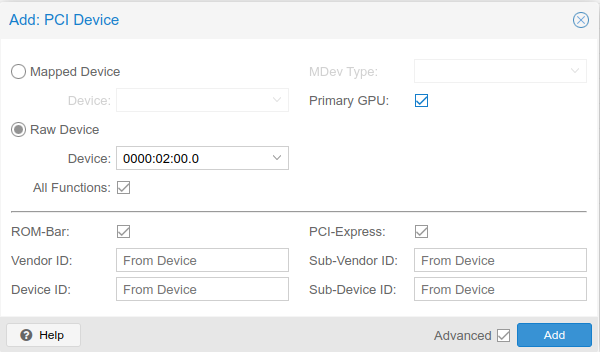
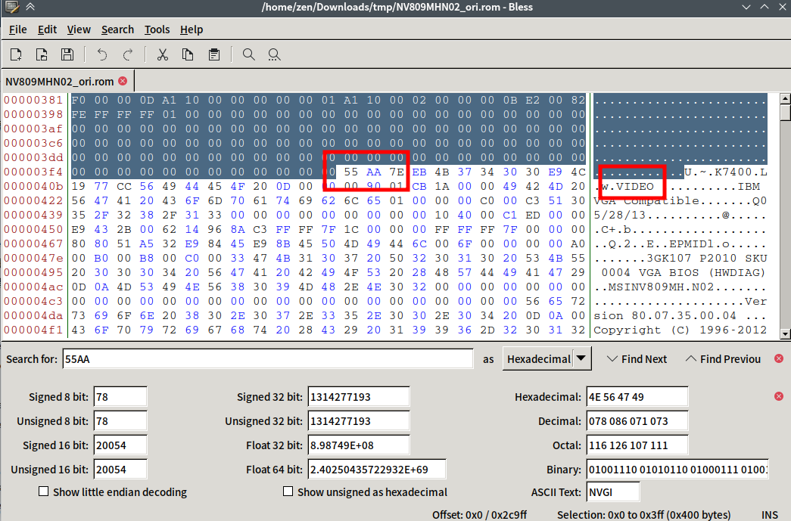
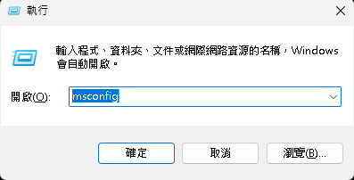
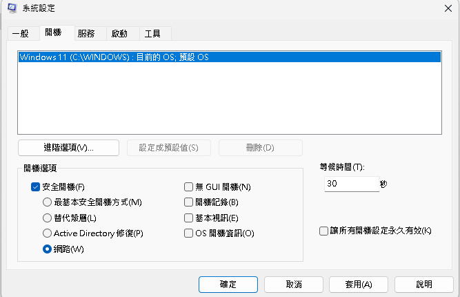
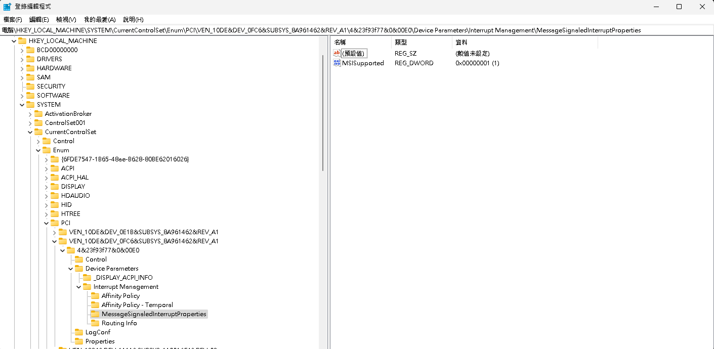

在Proxmox上進行PCI-E直通
前言
簡單來說，PCI Passthrough就是將物理機(Host)上的PCI(E) device從Host上隔離並直通給客戶機(Client)的技術，對於Client來說，就會認為他真的插著一個PCI device。
直通也不一定是直通PCI device，也有可能是直通透過SR-IOV或是其他技術虛擬化出來的資源，不過這就需要硬體集Driver的支持，相對來說會更複雜。
因為每個Host的配置都不同，每個Host的PCI直通設定都不完全相同，有時候甚至PCIE device插在哪個PCIE插槽可能都會有影響，可能別人能用的解決方法你試就沒用，堪稱玄學。而直通顯卡到Windows Client更是PCI直通中最麻煩的設定，大概率會碰到更多的問題，不同Host的解決方法還不一定一樣，我對此的評價只有：玄學中的玄學。
設置
設定這部分我會大致分成四個區塊，第一部分是PCI Passthrough一定要做的設定，第二、三部分是我遇到的兩個問題及對我有用的解法，第四部分則是我整理的其他問題可能適用的方法
基礎設定
這部份的設定是PCI Passthrough都要進行的設定，如果運氣很好，硬體的組合剛好，那可能只需要這部份的設定就成功直通了。
- 加入kernel parameter來開啟IOMMU
使用Intel CPU的話要加的參數是intel_iommu=on(雖然PVE的核心編譯的時候有打開CONFIG_INTEL_IOMMU_DEFAULT_ON，但仍然需要設定)
AMD CPU則不需要加參數，只要檢測到支持就會開啟IOMMU
不管使用什麼CPU都建議加上iommu=pt，如果硬體支援則可以提高性能
視自己使用的bootloader來進行更改
如果是在PVE7後使用UEFI安裝，則bootloader會使用systemd-boot，反之，使用BIOS安裝則是使用Grub，但如果是原本使用Grub開機並升級上來的則會繼續使用Grub
- systemd-boot
編輯/etc/kernel/cmdline
1 | |
編輯完後使用pve-efiboot-tool refresh來更新bootloader
- Grub
編輯/etc/default/grub
找到GRUB_CMDLINE_LINUX或是GRUB_CMDLINE_LINUX_DEFAULT
1 | |
編輯完後使用update-grub來更新bootloader
修改完後重新開機，可以使用以下指令來確認是否成功開啟IOMMU(可以等到後面設定完再一起重新開機)
1 | |
應該要出現包含一行DMAR: IOMMU enabled的內容
1 | |
視不同CPU的廠商，會有不同內容，有出現其中一行就OK
AMD-Vi: Interrupt remapping enabledDMAR-IR: Enabled IRQ remapping in x2apic mode
- 開機載入
vfiomodule
編輯/etc/modules，加入以下內容
1 | |
也許在其他教程還會多一個vfio_virqfd，不過在kernel6.2後這個模組不再需要加了，已經包含在vfio內了
編輯完後使用update-initramfs -u -k all來更新initramfs
- 設定顯卡隔離
使用指令來確認要直通的PCI device是不是單獨在一個iommu group裡。
有些主板的南橋分配會不同，導致插在南橋引出的PCIE上會和其他設備分在同一組，解決方式就是換個插槽，或是插到直連CPU的PCIE上
1 | |
輸出大概這樣
1 | |
一般來說一張顯卡會有至少兩個設備，顯示和聲卡兩部分，如果是有typec的卡還會有更多的設備
將要直通的設備的vendor id和device id記起來，我要直通GK107(GTX650)，因此就是10de:0fc6和10de:0e1b
編輯/etc/modprobe.d/vfio.conf來設定vfio參數，ids後面加的就是要直通的設備id，後面softdep是讓核心在載入這些模組前優先載入vfio，避免被driver的模組搶先，這邊只有NVIDIA的driver module，如果使用intel或是amd的顯卡需要改為對應的模組
1 | |
如果不想用softdep，也可以直接把driver的module給blacklist，編輯/etc/modprobe.d/blacklist.conf，這邊也只有blacklist NVIDIA的driver module，如果使用intel或是amd的顯卡需要改為對應的模組
1 | |
做完這些設定後重新開機，並執行dmesg | grep vfio如果有看到輸出，那應該就是正確啟動了
如果順利的話，只需要做完這些設定、安裝一個虛擬機，並加入PCI device就大功告成了

建議把PCI-Express勾起來，如果是直通顯卡則Primary GPU也建議勾起來
此時把虛擬機打開應該可以在直通的顯卡連接的螢幕上看到畫面，並且console不再有顯示，等到啟動到系統並安裝驅動，如果都沒問題，那就算是成功了
如果沒有成功，可以嘗試我底下提供的其他解法
問題1：顯卡無顯示
問題的具體症狀大概包括這幾個，直通的顯卡沒有輸出任何內容，在Windows Client上可以看到GTX650的裝置，也可以打上驅動，但是會有code 43的error
由於我使用的NVIDIA driver版本>465，所以不是因為驅動發現是虛擬機才顯示code43(在465的版本前，如果驅動發現是虛擬機會報code 43 error，需要給vBIOS打patch，並隱藏虛擬機特徵才能通過)
在這個問題上我多設定了幾個地方，但是具體是哪些設定有起效果，我也不知道，反正這個問題解決了
因為在確認remapping的時候看到dmesg | grep 'remapping'的輸出還有一行x2apic: IRQ remapping doesn't support X2APIC mode，因此kernel parameter加上了intremap=no_x2apic_optout
- 給kernel parameter加上
video=efifb:off和intremap=no_x2apic_optout[1]，改完需重啟 - 在
options vfio-pci ids=10de:0fc6,10de:0e1b後加上disable_vga=1 - 更換vBIOS(顯卡的BIOS)
由於顯卡直通會需要顯卡有支援UEFI的vBIOS，可以使用這些指令來把目前顯卡的vBIOS dump出來
1 | |
然後使用rom-parser來驗證
1 | |
輸出應該要像這樣，需要有顯示type 3 (EFI)
1 | |
如果只有type 0，就需要去找對應的有UEFI支援的vBIOS，可以嘗試在Tech Powerup上搜尋，只是我在上面找到的vBIOS也是沒有EFI支援的vBIOS，後來是在微星的論壇上找到有人提供有EFI支援的vBIOS
我找到對應的vBIOS後使用nvflash刷入顯卡上，可以從Tech Powerup上下載nvflash
接著在虛擬機的設定中指定vBIOS為rom file
將剛剛的vBIOS移到/usr/share/kvm/底下
1 | |
編輯/etc/pve/qemu-server/105.conf，數字是要直通的虛擬機的vmid，在hostpci0後面加上romfile，如果不設定romfile，則開機的時候不會顯示，直到進入系統
1 | |
經過這些設定並重新開機後，問題1解決了，症狀變為問題2
問題2：無法安裝驅動
具體的症狀大概是只要Windows Client不裝驅動，那麼就可以正常開機，但是使用連在顯卡上的螢幕裝驅動會裝到一半直接黑屏死機，如果是使用RDP遠程連入裝驅動，雖然可以成功安裝，但是開機到進入系統前就會直接死機重鎧(只能開機到轉圈的地方，猜測是載入驅動的時候內核的問題)
經過一些googling後在UNRAID的論壇[2]和Proxmox的論壇[3]上找到了和我相同問題的提問，給出的解法加上一些kernel parameter後在Windows Client中使用安全模式安裝驅動，並將顯卡的MSI(Message Signaled Interrupts)打開，我嘗試後成功解決問題，直通成功。
- kernel parameter加上
video=efifb:off video=vesafb:off video=simplefb:off，之前已經加過了video=efifb:off，所以實際只加video=vesafb:off video=simplefb:off，更改完需重啟 - 將顯卡的vBIOS打上patch，我不確定這一步有沒有影響，這一步一般來說是用來規避NVIDIA舊版本驅動對虛擬機的限制
使用HEX Editor打開剛剛dump出來或是下載的vBIOS文件，找到55AA這兩個值，並且他後面應該會有VIDEO的文字，將55AA前面的內容全部刪掉

- 開啟虛擬機，並進入安全模式
按下Meta+R，輸入msconfig，並在開機的選項中把安全啟動勾起來，這樣之後開機都會進入安全模式，直到把安全啟動取消


- 如果之前有嘗試安裝NVIDIA驅動則下載DDU，來徹底刪除驅動並重啟虛擬機
- 在安全模式中安裝NVIDIA驅動
- 將顯卡開啟MSI
可以參考這篇文章[4]來確認目前設備的中斷形式是哪一種，以及如何手動開啟MSI
要開啟MSI可以先嘗試使用MSI_util，如果有在列表中看到顯卡，就只需要把後面的勾勾起來就好
不過我的顯卡沒有出現在設備列表中，所以我使用更改註冊表來開啟MSI
首先開啟regedit，並進入\HKEY_LOCAL_MACHINE\SYSTEM\CurrentControlSet\Enum\PCI\
在這個項目底下找到對應顯卡對應的子機碼，前面有提到顯卡的id是10de:0fc6，因此進入VEN_10DE&DEV_0FC6&SUBSYS_8A961462&REV_A1\，他底下應該只有一個子機碼，在裡面找到Device Parameters\Interrupt Management\，如果底下沒有MessageSignaledInterruptProperties的子機碼，就直接建立即可，並在這個機碼中建立一個DWORD，名稱為MSISupported，值設定為1即開啟MSI
註：更改註冊表有風險，最好先進行備份

我在完成開啟MSI，並重開虛擬機後就成功直通顯卡了，且沒有任何錯誤
其他疑難雜症
這邊大概會簡略介紹我看到的其他問題之解法，但不一定適用，建議參考文章[5][6][7]和搜尋進行評估
- code 43
在NVIDIA驅動465版本之前，它會檢查機器是不是虛擬機，如果是，即使直通成功，驅動也會報錯誤代碼43
對應的解決方法就是隱藏虛擬機和修補vBIOS，修補vBIOS的方式前面已經提過了，這裡就不重提了
隱藏虛擬機可以透過在虛擬機的設定檔加上參數[8]
1 | |
或是可以在網路上搜尋其他隱藏的方法並去嘗試，不過現在應該不需要這部份了，前幾年NVIDIA放開對於虛擬機的限制，現在不會因為虛擬機而報錯code43
- 開啟專用IOMMU group
如果IOMMU並沒有給要直通的設備單獨分組可以嘗試給kernel parameter加上pcie_acs_override=downstream，不過wiki[6]也有提到這是最後的選擇，可能會有風險，VM可以讀取所有Proxmox Host的記憶體
參考
- [SOLVED] - x2apic: IRQ remapping doesn’t support X2APIC mode | Proxmox Support Forum ↩
- Windows 10 VM crashes/breaks during Nvidia driver install for GPU passthrough. - VM Engine (KVM) - Unraid ↩
- [SOLVED] - GPU Passthrough issue | Proxmox Support Forum ↩
- Windows: Line-Based vs. Message Signaled-Based Interrupts. MSI tool. | guru3D Forums ↩
- PCI passthrough via OVMF - ArchWiki ↩
- PCI Passthrough - Proxmox VE ↩
- PCI(e) Passthrough - Proxmox VE ↩
- PCI passthrough Error code 43 | Proxmox Support Forum ↩
- [TUTORIAL] - PCI/GPU Passthrough on Proxmox VE 8 : Installation and configuration | Proxmox Support Forum ↩
- Ultimate Beginner’s Guide to Proxmox GPU Passthrough ↩
- PCI通透 - HackMD ↩
- PVE虚拟机安装流程（推荐） · 游戏串运营教程 · 看云 ↩
- Proxmox显卡直通 - Noodlefighter’s Wiki ↩
- Proxmox VE 直通显卡方案及解决N卡Code43 - moper 工作技术展示 ↩